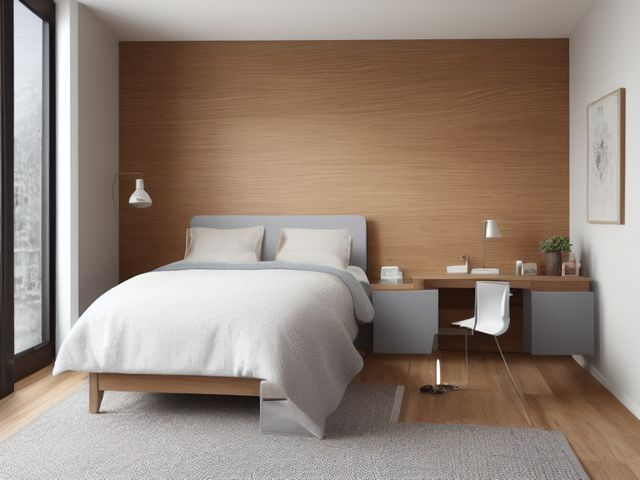

Guest Bedroom micro zone
The Guest Welcome and Work Surface
Where a guest lands the suitcase, charges a laptop, and answers the email they came to this room to escape.
One session: 30-45 min. most of it in Sort, clearing whatever the desk has been holding for the rest of the house

What done looks like
A clear desk with a working lamp, a chair pulled up to it, a luggage rack or a taped floor square for the suitcase, one labelled bin holding a spare charger, wifi card, water glass, tissues and a folded spare blanket, and a reachable outlet with no cord crossing the floor.
Check these before you start
- FallAn extension lead running from the desk across the open floor to the only reachable outlet, in the strip of carpet a guest walks in the dark.
- Fall, cut, or crushA folding luggage rack that has never been load tested, or a hard case balanced on the desk edge, in a room where a child may be playing while you carry cases in and out.
The six passes, in order
Work them in this order. Sorting after you have arranged things means arranging things you were about to remove.
Sort
Decide what stays. Everything else leaves the zone now.
Clear the surface completely. It will be holding gift wrap, an ironing pile that never made it back, a printer that has not been switched on this year, and paperwork someone brought in here to deal with in peace. The ironing goes back to the wardrobe it came from, the printer either earns a desk somewhere it gets used or leaves the house, and the paperwork goes into the file it was always headed for.
Straighten
Give what stays a home, placed where the hand actually reaches.
Put the welcome bin where a guest sees it the moment they stand in the doorway, and set the luggage rack where a suitcase can open fully without hitting the bed frame or the closet door.
Shine
Clean it, and use the cleaning to inspect what you cannot see when it is full.
Wipe the desk and the chair seat and back, both of which collect a dust film in an unused room, and check the desk lamp works now rather than during a guest's first evening.
Safety
Make the zone safe for everybody who uses it, including the shortest person.
The classic hazard here is the extension lead run across the floor because the only outlet is behind the bed. Move the desk to the outlet rather than the outlet to the desk, and if a suitcase must live on a folding rack, open it and lean on it to be sure it holds a packed case without folding.
Standardize
Write down the best way you know today, so it survives you forgetting.
Photograph the room in its ready state and keep the print inside the lid of the welcome bin, so setting up is matching a picture rather than remembering a list.
Sustain
Attach the reset to something that already happens, so it keeps itself.
When you carry the departing guest's sheets to the wash, the welcome bin comes with you and gets restocked on the way back.
The room's second job
Almost every guest room is also something else: the home office, the sewing room, the place the exercise bike ended up. Pretending otherwise is precisely why hosting takes an afternoon, because you are not tidying, you are relocating an entire activity under time pressure. Name the second job out loud and give it a marked footprint, then test it honestly: can you clear that footprint into one bin or one cupboard, in a single trip, without unplugging anything? If yes, share the room and set the boundary in tape. If no, the second job is too big to share this room, and something moves out for good. That decision is uncomfortable, and it is the one that turns hosting from an event into a bed change.
Cleaning it properly
A guest lands a suitcase here, plugs in a laptop, and answers the email they came to this room to escape. Clean it so it works on their first evening, not so it looks good in a photo, and check the lamp comes on before they need it.
Inspect as you clean. Cleaning is the only time you see the zone empty, so use it.
- As you clear the desk cords, flag a plug or extension lead that feels warm, looks scorched, or has a cracked outer sleeve.
- Flag a desk lamp that flickers or will not come on when you test it.
- Flag frayed webbing or a loose hinge on the folding luggage rack as you wipe it down.
- Flag a water ring or a heat mark on the desk top left by a past mug or laptop charger.
- Flag a wobble in a desk leg or a chair joint that has worked loose under weight.
The standard that keeps it fixed
Clear desk, marked suitcase footprint, one labelled welcome bin with the ready-state photo inside the lid, and no cord crossing a walking line.
Reset trigger. When the guest's sheets go into the machine, the welcome bin is restocked and put back before you leave the room.
Next in this room
- The Guest Closet, the zone before this one
- All 5 micro zones in the Guest Bedroom
Related reading
- What is 6S?
- This zone's safety pass, in full
- Is one spot in this zone always the one you skip?
- Why this zone gets messy again
- Decluttering vs. organizing
- Before you buy storage for this zone
- Still does not fit, even after the honest count?
- Does something in this zone actually get used somewhere else?
- Stuck on one item in this zone?
- Written the standard, but nobody else follows it?
- Does everyone in the house agree what "done" looks like here?
- Does more than one person use this zone?
- Found a duplicate of something in this zone?
- Why the standard above names one home per category
- Is the everyday item in this zone actually the easy one to reach?
- Not sure whether to keep something in this zone?
- Does this zone keep running out of something?
- Started this zone and stalled partway through?
When you want it off the screen
Carry The Guest Welcome and Work Surface into the room
The method above is complete and free. The Whole House Print Pack puts The Guest Welcome and Work Surface and the other 113 micro zones on 684 printable cards, so the steps you just read are not stuck behind a phone screen while your hands are full.
The Print Pack, 19 dollarsOr draw a card free
If The Guest Welcome and Work Surface keeps fighting back, the real problem usually sits somewhere else in the room. A one hour virtual consult is 250 dollars: we find the function, the friction and the root cause together, and you keep a written standard for the space. See what a consult covers.